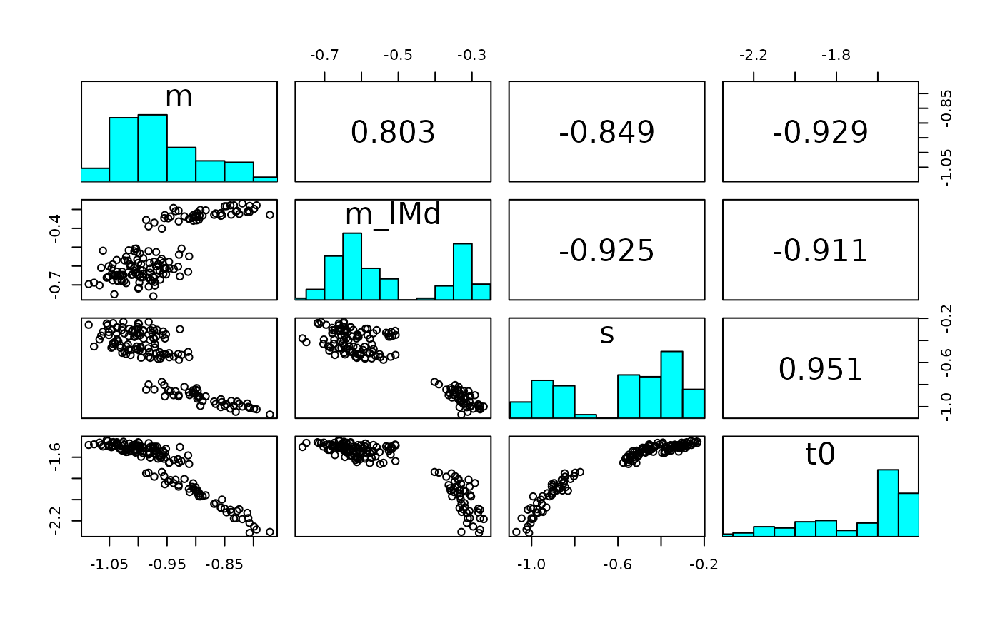
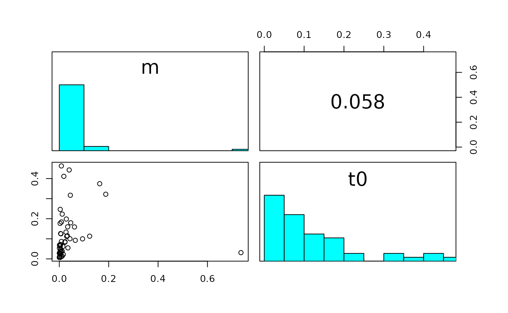

Plots within-chain parameter correlations (upper triangle) and corresponding scatterplots (lower triangle) to visualize parameter sloppiness.
Usage
pairs_posterior(
emc,
selection = "alpha",
scale_subjects = TRUE,
do_plot = TRUE,
N = 500,
...
)Arguments
- emc
An emc object
- selection
A Character string. Indicates which parameter type to plot (
alpha,mu,variance,covariance,correlation).- scale_subjects
Boolean. To standardize each participant with
selection = "alpha", by subtracting the mean and divding by the standard deviation. This ensures the plot has every participant on the same scale.- do_plot
Boolean. Whether to plot the pairs plot, if
FALSE, only the correlations are returned.- N
Integer for maximum number of iterations used (defaults to 500). If number of samples in stage or selection exceeds N, a random subset will be taken of size N
- ...
Optional arguments that can be passed to
get_pars
Details
If selection = alpha the parameter chains are concatenated across participants,
(after standardizing if scale_subjects = TRUE) and then correlated.
Examples
# \donttest{
# Plot the sloppiness for the individual-level subjects
pairs_posterior(samples_LNR, selection = "alpha")

# We can also choose group-level parameters and subsets of the parameter space
pairs_posterior(samples_LNR, use_par = c("m", "t0"), selection = "sigma2")

# }